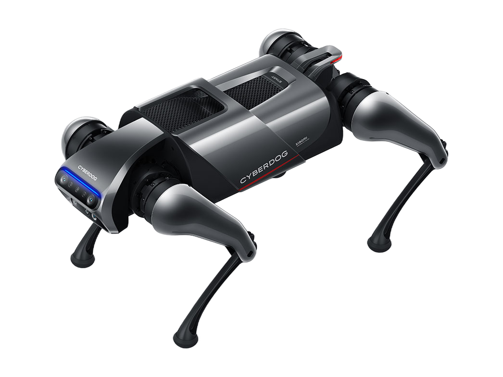

Manufacturer's own photo.
Key figures as stated by the manufacturer
4 of 6 key figures stated- Weight A 14kg30.9lbOur conversion from 14 kg. The manufacturer does not state an imperial figure itself, so the conversion has no source of its own.
- Payload, walking A 3kg6.61lbOur conversion from 3 kg. The manufacturer does not state an imperial figure itself, so the conversion has no source of its own.
- Runtime A approximately 60minNote: load condition not stated
- Max speed A 11.52km/h7.16mphOur conversion from 3.2 m/s. The manufacturer does not state an imperial figure itself, so the conversion has no source of its own.
Not stated: IP rating · Indicative price
Intended use, per the manufacturer
not stated
READ THROUGH, NOTHING FOUND - also in the JS bundle, where the specifications live. The manufacturer's only label is the product type biomimetic quadruped robot and the model number 21051191C. That is what it IS, not who it is for. Same result as on CyberDog 2.
Full specifications
16 of 33 specifications stated| Field | Value | Source and caveats |
|---|---|---|
| Physical | ||
| Weight | 14kg30.9lbOur conversion from 14 kg. The manufacturer does not state an imperial figure itself, so the conversion has no source of its own. | Note Manufacturer's label: whole-machine weight, including battery. A |
| Length | 77.1cm30.4inOur conversion from 771 mm. The manufacturer does not state an imperial figure itself, so the conversion has no source of its own. | A |
| Width | 35.5cm14inOur conversion from 355 mm. The manufacturer does not state an imperial figure itself, so the conversion has no source of its own. | A |
| Height | 40cm15.7inOur conversion from 400 mm. The manufacturer does not state an imperial figure itself, so the conversion has no source of its own. | Note A lying-position measurement is also given: 807 x 406 x 206mm. This is a different posture from folded. A |
| Degrees of freedom | 12DoF | Note Manufacturer states 12 in total, 3 per leg. A |
| Payload, walking | 3kg6.61lbOur conversion from 3 kg. The manufacturer does not state an imperial figure itself, so the conversion has no source of its own. | Caveat The manufacturer's label is maximum load, one figure, without distinguishing walking from standing load. A |
| Payload, standing | not stated | |
| Max speed | 11.52km/h7.16mphOur conversion from 3.2 m/s. The manufacturer does not state an imperial figure itself, so the conversion has no source of its own. | Caveat Manufacturer writes MAX 3.2m/s. The footnote on the same page: the lab-measured maximum walking speed is 3.2 m/s, while the maximum SAFE walking speed is 1.6 m/s. Two figures on the same page, half of each other. The printed headline figure is 3.2. A |
| Max slope | not stated | |
| Max obstacle height | not stated | |
| Max stair height, continuous | not stated | |
| IP rating | not stated | |
| Operating temperature, low | 0°C32°FOur conversion from 0 °C. The manufacturer does not state an imperial figure itself, so the conversion has no source of its own. | Note 0 degrees is a disclosed lower bound, not a missing figure. For outdoor Danish winter operation it is a disqualifier. A |
| Operating temperature, high | 40°C104°FOur conversion from 40 °C. The manufacturer does not state an imperial figure itself, so the conversion has no source of its own. | A |
| Power | ||
| Battery | 120.9Wh | Caveat NOMINAL capacity: 5.6Ah / 120.9Wh at 21.6V. Cross-check: 5.6 x 21.6 = 120.96 - the manufacturer's figure works out. The manufacturer ALSO discloses a rated capacity of 5.2Ah / 112.3Wh. The two are 7.1% apart, and that is the manufacturer's own difference, not an error. A |
| Runtime | approximately 60minNote: load condition not stated | Caveat No load condition, but a state condition. Manufacturer's footnote: the one hour is measured as a composite of lying down, standing up, displaying static poses, and stable regular-ground walking. A |
| Hot-swap battery | not stated | |
| Charge time | 160min | A |
| Docking station | not stated | |
| Sensing and autonomy | ||
| LiDAR | not stated | Note The manufacturer's sensor list has twelve items and none of them is a LiDAR: RealSense D450 depth camera, AI interaction camera, binocular ultra-wide-angle camera, TOF sensor, light sensor, ultrasonic sensor, IMU, GPS module, magnetometer, optical flow sensor, 6-mic ring array, and touch sensor. The manufacturer does not say that the list is complete. A |
| Cameras | Intel RealSense D450 (depth) x1; AI interaction camera 13 MP x1; binocular ultra-wide-angle camera 2 MP | A |
| Onboard compute | 6-core NVIDIA Carmel ARM v8.2 64-bit CPU; 384-core NVIDIA Volta GPU with 48 Tensor Cores; 8 GB 128-bit LPDDR4x; 16 GB eMMC 5.1; 128 GB SSD | A |
| ROS 2 | yes | Note Manufacturer writes Ubuntu 18.04+ROS 2. The ROS 2 version is not named. A |
| SDK languages | not stated | |
| Autonomy features | not stated | |
| Payload and expansion | ||
| Mounting interface | not stated | |
| Power out | not stated | Note Manufacturer discloses the AD100 power supply: input 100-240V 50/60Hz 1.6A, output 20V 5A max. That is power IN to the robot, not power OUT to a payload. The Type-C port labeled peripheral expansion port has no disclosed wattage. A |
| Data ports | HDMI x1 USB Type-C x3 | Note Manufacturer divides the three Type-C ports by function: fast-charge, download, and peripheral expansion port. Wireless: Wi-Fi IEEE 802.11 a/b/n/g/ac and Bluetooth 4.2 - an older Bluetooth than CyberDog 2's 5.0. A |
| Commercial | ||
| Indicative price | not stated | Note The page's own product JSON says price 0, market_price 0 and is_enable false for product id 14815. A price of 0 for a product with is_enable false means NO PRICE SET, not costs zero. Exactly the same picture as CyberDog 2. |
| Compliance & certifications | ||
| CE | not stated | Records only what the manufacturer states regarding CE marking. |
| FCC | not stated | |
| UL | not stated | |
| CCC | not stated | |
How to read the figuresShow guideHide guide
Notes
Notes and variants for the key figures (5)
Weight
Note Manufacturer's label: whole-machine weight, including battery.
Payload, walking
Caveat The manufacturer's label is maximum load, one figure, without distinguishing walking from standing load.
Runtime
Caveat No load condition, but a state condition. Manufacturer's footnote: the one hour is measured as a composite of lying down, standing up, displaying static poses, and stable regular-ground walking.
Max speed
Caveat Manufacturer writes MAX 3.2m/s. The footnote on the same page: the lab-measured maximum walking speed is 3.2 m/s, while the maximum SAFE walking speed is 1.6 m/s. Two figures on the same page, half of each other. The printed headline figure is 3.2.
Indicative price
Note The page's own product JSON says price 0, market_price 0 and is_enable false for product id 14815. A price of 0 for a product with is_enable false means NO PRICE SET, not costs zero. Exactly the same picture as CyberDog 2.
More robots
Same manufacturer
Same type and weight class


Sources
-
A
Main source. www.
mi. · Retrievedcom/ cyberdog/ specs -
B
www.
mi. · Retrievedcom/ cyberdog
One line per source, not per figure: a source has one retrieval date.